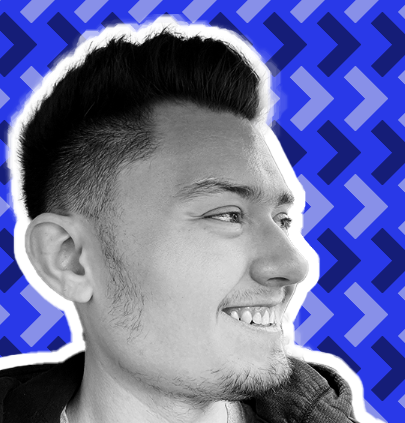

Hello!
I’m a front end web developer & designer currently based out of the Midwest. I specialize in creating beautiful, accessible websites. When I am not solving creative technical challenges, I can be found hiking and gardening.
I’m a front end web developer & designer currently based out of the Midwest. I specialize in creating beautiful, accessible websites. When I am not solving creative technical challenges, I can be found hiking and gardening.
I have a strong background in digital design & animation, where I grew notable brands like Better Life, Hasbro and Symmetry with engaging design across web, email and social media platforms. I fell in love with using programming to deliver interactive experiences, and am transitioning my deep knowledge of front end design into development work.
I am currently studying Web Development at LaunchCode, where I am learning the latest cutting-edge web development technologies. I have a Bachelor of Arts from Webster University in Communications with an Animation specialization, where I mastered visual communications in the interactive digital media space. I’ve also earned a certificate from Google in Digital Marketing & E-Commerce, rounding out my knowledge with a solid foundation in user journeys, digital marketing campaigns and SEO.
A list of technologies I love to use:
In my free time, I enjoy outdoor and social activities. I picked up gardening during the pandemic, and grow the best tomatoes you've ever eaten. I love volunteering out in my state and local parks to keep them beautiful. There, I maintain and restore wildlife habitats, and help other volunteers learn how to identify and control invasive species. I also enjoy board games and trying new foods!
Looking for a reliable, creative web developer? Feel free to reach out, or check out more of my work:
Linkedin
Github
Email
Design Portfolio